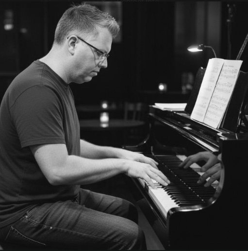

Andy Burdge · at the keys
Hello, I'm Andy.
Welcome to Grace Notes — a place where music and faith meet. I've spent a lifetime at the piano, finding that the language of keys and chords often says what words alone cannot.
Whether I'm playing hymns on a Sunday morning, exploring classical repertoire, or just noodling through a quiet evening, the piano has always been my way of praying without words.
This site is where I share that journey with you — through my blog, my YouTube channel, and a daily dose of Scripture to start your day.
A Statement of Faith
Gratia et Cantus Firmus
My faith is not a list of rigid rules, but a living melody built upon the unwavering anchor of God's grace in Jesus Christ.
I. God: The Architect
"The Lord is merciful and gracious, slow to anger and abounding in steadfast love." — Psalm 103:8
II. Jesus: The Christ
"He is the image of the invisible God, the firstborn of all creation." — Colossians 1:15
III. The Holy Spirit: The Animating Breath
"The Spirit helps us in our weakness... intercedes with sighs too deep for words." — Romans 8:26
IV. Humanity: Saints and Sinners
"For by grace you have been saved through faith... it is the gift of God." — Ephesians 2:8–9
V. Prayer: The Essential Dialogue
"Rejoice always, pray without ceasing, give thanks in all circumstances." — 1 Thess 5:16–18
VI. Scripture: The Score
"Your word is a lamp to my feet and a light to my path." — Psalm 119:105
VII. Worship: Orienting Life
"True worshipers will worship the Father in Spirit and truth." — John 4:23
VIII. Baptism: Rebirth
"We were buried with him by baptism... so we too might walk in newness of life." — Romans 6:4
IX. Communion: The Lord's Table
"Do this in remembrance of me." — Luke 22:19
X. Leadership: Three Strands
"The Son of Man came not to be served but to serve." — Mark 10:45
XI. The Church: Unity in Diversity
"Making every effort to maintain the unity of the Spirit in the bond of peace." — Ephesians 4:3
Find me here
Daily Devotional